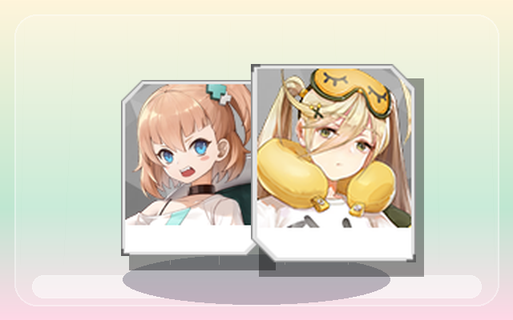

TEA
品牌
等待抽取TEA
先确认今天喝不喝它；喝完以后可以在历史记录里继续打分。
TEA OBSERVATORY · 02
今天不知道喝什么也没关系。把口味交给这台安静运转的选择仪，它会记住雪的每一次喜欢。

轻轻按下，开始冲泡今天的灵感。
TASTE MEMORY
品牌
等待抽取先确认今天喝不喝它；喝完以后可以在历史记录里继续打分。
DRINK HISTORY
TASTE ATLAS
MILK TEA ATLAS
FOR XUE
我一直觉得，你每次纠结喝什么奶茶的时候，其实特别可爱。
不是因为你真的选不出来，而是因为那一刻我会感觉，我好像又多了一个可以照顾你的机会。
所以我做了这个小小的奶茶机。
它现在可能还不够聪明，也不一定每次都猜得准，但它会慢慢记住你喜欢什么、不喜欢什么，记住你偏爱的茶香、甜度、奶味，也记住那些你说“下次别点了”的踩雷款。
就像我也在慢慢学着更懂你一样。
今天先让它替我认真推荐一杯奶茶。希望你喝到第一口的时候，会觉得：嗯，今天也有人在好好想着我。